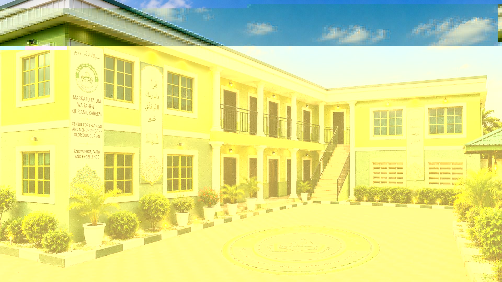

Our Mission
To nurture learners through Qur’anic memorisation, Islamic values and quality academic education while encouraging discipline and good character.
Get to know us
A place where Qur’anic learning, Islamic values and academic education come together to support the growth of every learner.
Our school
The Centre for Learning and Memorization of the Glorious Qur’an (MARKAZ), also known as مركز تعليم وتحفيظ القرآن الكريم, is located at Compensation Layout / Old Kuutunku, Gwagwalada, Abuja, Nigeria.
MARKAZ is committed to nurturing learners through the teachings of the Noble Qur’an, sound Islamic values and quality academic education. We aim to help learners build knowledge, discipline, good character and respect for others.
We value the partnership between the school and families and recognise the importance of a supportive learning environment in each child’s development.

What guides us
The principles that guide our approach to Qur’anic education, learning and personal development.
To nurture learners through Qur’anic memorisation, Islamic values and quality academic education while encouraging discipline and good character.
To support the development of knowledgeable, responsible learners grounded in faith, understanding and positive character.
Faith, respect, discipline, honesty, attentiveness, responsibility and a commitment to continuous learning.

A message from our director
Assalamu Alaikum Warahmatullahi Wabarakatuh.
Welcome to MARKAZ, where we are committed to nurturing learners through the teachings of the Noble Qur’an, sound Islamic values and quality academic education.
We aim to develop individuals with strong faith, good character, discipline and respect for others. We value the partnership of parents and guardians and believe that working together is essential to every learner’s success.
May Allah bless our efforts, grant our learners beneficial knowledge, and make the Glorious Qur’an the light of their hearts. Amin.
Jazakumullahu Khairan.
Academic milestones
We support learners as they progress through their academic journey while strengthening their Qur'anic learning and Islamic values.
Pupils completing Basic Five are prepared for the Common Entrance examination as they progress towards secondary education.
Students completing GSS 3 are prepared for the Junior WAEC examination as an important milestone in their education.
MARKAZ encourages learners to participate in Qur'an competitions, demonstrating their memorisation, recitation and knowledge of the Glorious Qur'an.
Explore our academic approach, learn how to enquire about admission, or contact the school for further information.
School Life
MARKAZ provides boarding and day-student options to support different family needs.
Families interested in boarding can contact the school to learn about accommodation arrangements, routines and current requirements.
Day students attend school and return home after the school day. Please contact MARKAZ for details about daily arrangements and attendance.
School hours: 8:00 a.m. to 6:00 p.m.
School days: Saturday to Thursday.
Friday: Weekly rest day.